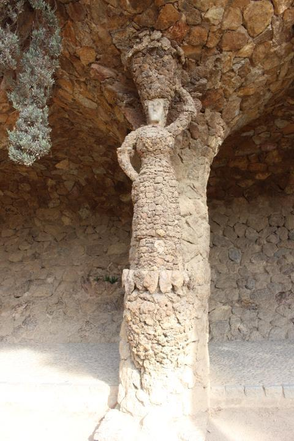

Week 5: 18/4/2022 - 25/4/2022¶
This week begins with a holiday, Lunes de Pascua, and is a little off the norm for classes. Because there are no Monday classes this week the Expanish folks are thinking we’re doing some sort of field trip in preparation for Saint Jordi’s day next week. The equivalent of Valentines Day in the US except the traditional gifts are books and roses. We’ll see how it all shakes out.
18/4/2022 Lunes Pascua¶
Note to Self: We have come to the realization that for us figuring out how to avoid the mobs of people as so many of these venues is important to our survival. We absolutely recommend getting up as early as you have to in order to be there when the venue opens. It feels like you get about an hour of reasonable peace and quiet and then it just gets crazier and crazier. A second point is that locals are always getting their tickets online and almost never show up expecting to by tickets at the venue. When we left at 11:30 from Parc Guell tickets for the day were sold out. Three days ahead we could buy tickets for any entrance time. By Saturday Emma could only get tickets at 1:00. This must get much worse during actual tourist season.
We got tickets to come see Parç Guell today because it was so hot on Friday when we thought of going originally. Today was a good bit cooler and we got tickets for 9:30 which is the opening time for the parc. I wasn’t sure how the metro would be running today but it was quite smooth so we had time for coffee and a croissant after we got off the metro. Only a few folks on the sidewalks climbing up to the parc. My legs still remembered the effort anyway. The entrance to the parc is at the bottom of the space and we slowly made our way around the lower area. So many things to notice. To get standard ceramic tiles to flow smoothly aroung the curved surfaces that Gaudi liked the tile was ‘smashed’ into about 30 regularly sized pieces and then reassembled on the curved surface with some extra space between the pieces so the mortar would hold it well. Even on flat walls with larger color blocks they surface was never allowed to be flat. On a particular wall I remember the white zones were all curved out and the adjacent colored sections curved inwards. The definition of an organic surface. The trails varied from smooth concrete pavement to packed dirt to very irregular cobble or exposed agregate materials. Definitely gotta watch your feet in a lot of places.
The first parts we walked through made us wonder whether the Peterson Rock Garden between Redmond and Bend took some inspriration from this site. The fantastic shapes and alcoves were all constructed from essentially rock rubble mortared together to form columns and walls. But not just simply wall and collumns because each element had additional textural form created as the rocks were laid up. It is impressive to see and feel a clear sense of spiralling twist using such an irregular material as rubble.
Natural rock work at Parç Guell
A particular example that we loved was this figure as one of the columns. Notice also the stalactite forms hanging between the columns. One almost feels that the project manager just handed out a sketch of how each column should look and the workers just did it. Having worked a little with rubble at home I find the whole concept amazing.
Column as a figure 
The whole experience of wandering around in these structures tended to make one look everywhere wondering what unexpected thing you might see. A case in point were some of the basins that were set into the curved back wall of the arcade. Dawn noticed that these basins which held some small plantings of fern like plants also had drain holes in the back. Since the basins where within the arcade they would never get natural rainfall though they do get plenty of light. It seems possible that drains to relieve hydrostatic pressure from behind the wall would keep the basins moist. Coco fiber mats in the botto of the basins keep the soil from flushing away between the cracks.
A lost soul in the parc…
After wandering around and exploring various parts of space we came back down to the Plaça de la Natura which is a large open plaza with a gorgeous Gaudi bench encircling the front edge of the space. Dozens of people all over the bench making it hard to appreciate and the lovely view of Barcelona (much like the view from the viewpoint last Friday) kept it crowded with people. As we went down the outside to get to the Sala Hipóstia we got a different and lovely view of the backside of the bench and the gargoyles.
The back of the Plaça de la Natura bench….
The Sala Hipóstia is a stunning space with columns that lean in along the edge and vertical columns internally. The ceiling is all tiles circular coves. At various points there are colorful shields that occupy some of the ceiling coves in colors and forms that suggest being underwater (see below). It’s very lovely. A particular effect of having many small shiny surfaces on the curved surfaces of the coves is that from any location with in the cathedralesque space you would see light reflected from many different parts of the ceiling. If the ceiling were flat the reflections would be more uniform in shape and predictable but with the curves each reflection had a unique shape and placement within the cove that was very engaging.
Ceiling of the Sala Hipóstia
The sheer number of people in this part of the parc quickly became overwhelming and we were grateful to be headed over to take a look through Gaudi’s house at the parc. The museum (as Gaudi’s house is labeled) is a very lovely structure but what was most engaging for us were the hooped pathway covers that were formed of steel T-bar (about 2 cm on each ‘leg’) that were embedded in concrete at the ground level and had welding steel spine down the top. The flat top of the T faced into the pathway and the stem of the T faced outwards. Light weight stainless cables were threaded longitudinally through the stem to provide support for the wisteria or other viney plants that grew to be the cover. We’re thinking we might try this with the hops and some grapes as well given how vigorously our hops and grapes grow. In the house there were lovely examples of the custom furniture he designed for every project. The little details were amazing and I should have taken pictures but I didn’t. The grouped seating elements (not sure whether to think of them as hardwood sofas or what) are beautiful but seem remarkably oversized for the scale of human beings. When I sat in one of the chairs at Casa Batllo I was swimming in it (not sitting on furniture at the museum). His single chairs had a more normal sense of scale. Even his church pews for the crypt (gotta figure out where that crypt is) were generous with their space for each individual. This aligns with his attention to the spiritual experience of the person using the pew. The pews are for two individuals and they are shaped so the users face gently away from each other to provide more privacy during prayer/meditation. Uses more space in the room but the quality of the experience for the user would be wonderful and introspective.
Lots of thoughtful details in the window work and other interior details caught my eye. There was a lovely hyperbolic arch that welcomed you into the bathroom even thought the primaryu walls and ceiling were traditionally rectangular. Many of the windows have louvered panelson the outside to allow air flow while restricting solar gain. There were inner panels that could be closed for privacy. When the windows open they tend to fold in the middle so they don’t intrude so far into the room. Thoughtful little touches. Between that and the doors it tempts me to foolish attempts with our master suite remodel.
As we left the museum we were distracted (as we often are) by hearing some music. As is our custom we followed the sound of the music until we found a small flamenco group performing in one of the arcades. 4 people, two guitarists, a drummer (cajon and found objects), and a dancer. Providing all the percussive background with a cajon and other objects was also what the group at the Palau de la Musica did on Saturday night. This was not as polished but plenty of energy and passion. The crowd was delighted. Dawn got some pictures and bought some CD’s.
Flamenco Dancer
We made our way out muttering about the crowds but at least it was cool with a breeze which made it much more bearable. We continue to be struck by the current fascinating with posing in front of everything. It’s not everyone but so many folks seem to feel a need to preen and strut in front of every ‘famous’ object that it is really obnoxious. The tic tok’ers and instagram influencers who want to show off their dance moves or hip dress stylings in some ‘cool’ location are irritating in a different way. Sort of feels like the world is just a backdrop or stage on which to be continuously performing. Under their feet and in front of their noses are marvelous works of craftsmanship that provide endless opportunity to introspection and examination to understand the skill and workmanship along with clues to different visions and perspectives on the wonderful world we live in. I’m definitely a codger now!
We stopped off at a cafe just out of the tourist drag and had a good lunch. Had yet another form of ensalada ruso and when I asked for a beer I got an Oktoberfest sized tankard. Yikes. All was tasty and eventually we headed home to do HW, update journals, study spanish, and just catch up with life.
Gotta remember not to forget to renew our phones in the next couple of days and get our new T-usual metro cards.
19/4/2022 Tuesday¶
Tuesday started with Music class followed by Dawn’s Kettlebell class. Today is apparently the last day for the mask mandate here in Catalonia except for public transit and hospitals and one other place that no one can remember. It will be interesting. One student had COIVD this weekend but was already separate from the rest so no risks that we can tell.
After Kettlebell class we went home for a snack and then I went back to pick up Dawns shoes at the gym on my way to pick up our new metro cards. Us ‘not so young ones’ can only get one month passes while the traditional age students get a 90 day pass, Actually a blessing to get a new pass every 30 days since they tend to quit working when they get bent or wet and stop working at relatively inconvenient moments when there is nobody at the station office to replace it. Replacement is actually pretty easy - you bring the pass that’s not working and your passport that matches the number on the T-usual pass and they generate a new card with the same passport number and expiration date. Takes only a few minutes if the station isn’t crowded.
When I got back we went over to Lanto to have lunch with Brian and Emma. The food was fabulous again as we expected. Brian and Emma seemed to very much enjoy it. Update on restaurant details. The owner is Ricardo along with his wife Arica. Simone is the Italian at the grill and prep table. Lanto is Ricardo and Arica’s son. Ricardo apparently spent 10 years cooking in Londay as a chef and the some years in Denmark before coming to Barcelona. We are very grateful that they are so convenient.
We had lovely conversations about Parc Guell that we both visited at different times yesterday. It was also fun to compare perspectives and insights that we feel like we’ve noticed being in Spain for a time. Emma had been in Cadiz for a month while we were in Barcelona. Brian is a quick study so his 3 days count as a month for me.
After Brian and Emma headed off to their evening plans Dawn and I went down to the local Yoigo store to try to get our phones/SIMs renewed. The Yoigo app didn’t really give me an option to do this so visiting a local store seemed like a good idea. This was one of those conversations that I felt pretty overwhelmed by and feel like I missed a bunch of content. Dawn is right that it might have been a good idea to try the conversation in English as the salesperson offered but I am admittedly a bit stubborn about trying to manage as best I can in the local language. We had used less than 2 GB of our 20 GB plan which seems crazy. Apparently he dropped our plan to 2 GB which should work fine but I was happy to keep paying for 20 GB (15€/month). I think he suggested that our phones will automatically charge our credit card each month unless we change something. In addition we put 20€ on each phone which I hope the phone will access to pay our fee for the plan if the credit card isnt accessible. We’ll know tomorrow what’s up since my plan is supposed to run out sometime tomorrow. We’ll see.
Came home and chilled and went to bed.
20/4/2022 Wednesday¶
Astronomy class in the morning and Spanish class in the afternoon. In between we stopped at We Love Italy. This is a small restaurant near the Spanish classroom that the other students found and recommended last week. We found it tasty and reasonable cost as well as friendly on every level. We generally agreed with the student assessment.
Today they combined both our classes into a single classroom and did a number of activities related to Sant Jordi’s Day which is Saturday. Some of the take aways are:
Single rose not a bunch of rosesl, the bunch is too ostentatious, makes you look like you want something.
The rose comes with a stalk of wheat to conote fertility – wasn’t aware of this at all.
April 23 also aligns with International Book Day which is connected to Shakespeare’ and Cervantes’ deaths.
Sant Jordi is the patron saint of Catalonia but it is not a day off from work even if it falls during the week.
Lots of the symbolism at Casa Batllo is tied to the legend of St George and the dragon. That was interesting.
The class created alternative stories of Sant Jordi and the dragon – Roy was especially impressive along with Dawn in enacting alternative vision of the story. Well done all!
After Spanish we walked back up to the Origo bakery to get some more bread and then down to see if the L5 line really was back in operation. Turns out it was - whew. Had a good dinner and then let Dawn lead us to Life Drawing in el Born. Almost ready for a solo flight there, soon.
A couple of days ago when doing laundry we dropped one of Dawn’s socks. It was one of a pair that Denali got for Dawn we were a bit sad. After waiting to see if the folks on who’s terrace it landed would put in in the stairwell or on the mailboxes (we could see that it got picked up) Elizabeth suggested that we lower a string with a note. Dawn did just that lowering a string 4 stories with the other sock and a note asking if they could attach the missing sock. When I pulled it up tonight to keep it from being rained on there were both socks. Mission Accomplished!! Very cool and amusing though they didn’t add anything to the note. Perhaps they will acknowledge us at some point in the future.
Hard to know what we’ll do tomorrow since it’s supposed to be raining pretty hard.
21/4/2022 Thursday¶
Slept in late since there was nothing pressing and heavy rain was predicted. The rain has come to pass to we are heading off to visit some of the contemporary art museums today.